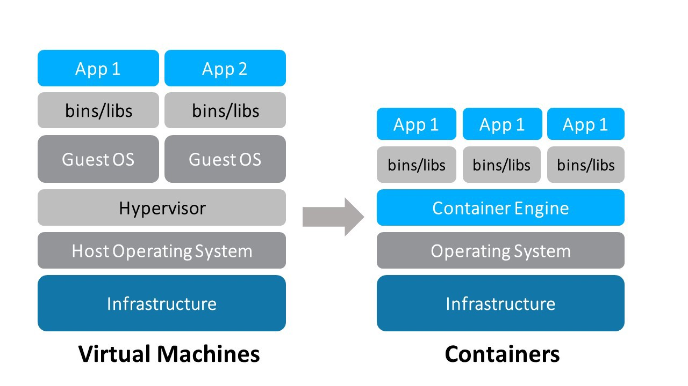
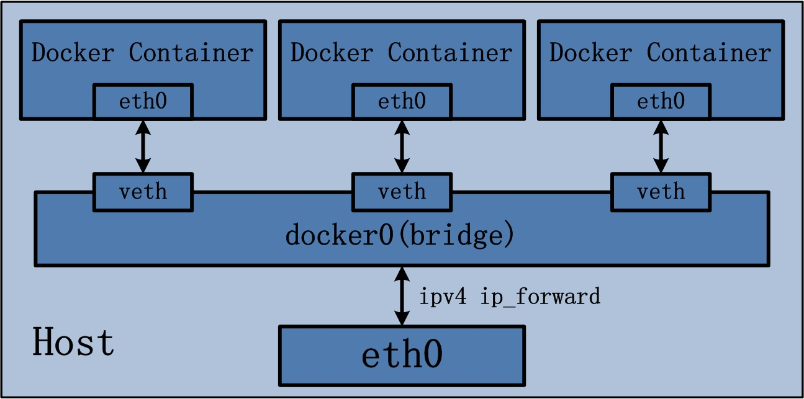
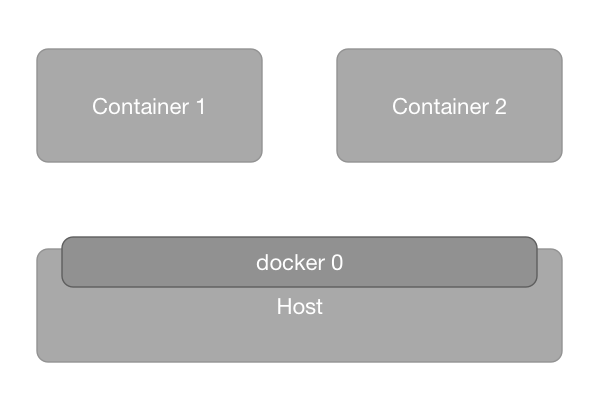
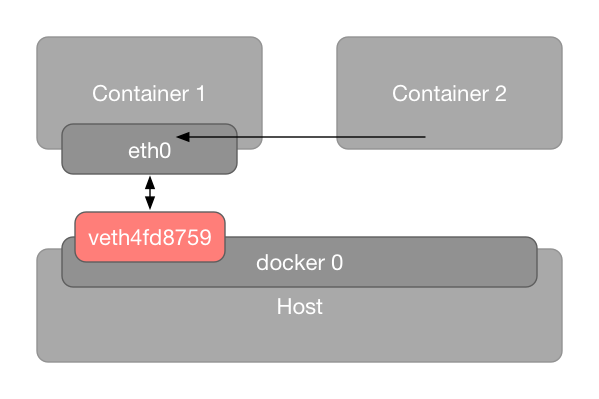
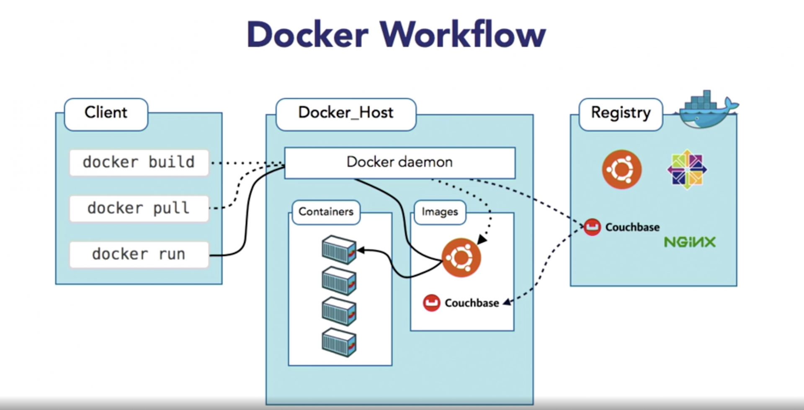

[容器] 容器技術之 Docker 篇 - 概念整理
閃避多年的主題，容器技術，到最後還是閃不到，只好乖乖的面對它。首先先針對比較常見的容器技術 Docker，將一些比較概念性的東西整理在這邊筆記內。
與 Virtual Machine 的差異
Docker 與虛擬機器(Virtual Machine)的差異
- Docker 容器與容器間共用相同的 OS Kernel，虛擬機器是各自擁有自己的 OS，這表示 Docker Server 如果是跑 Linux 版本(通常也是這個)，就不能跑 Windows 的容器。虛擬機器只是共用硬體資源，所以在 VM Server 上就可以並存 Linux base 和 Windows Base
- 在同樣的硬體資源下，Docker 可以跑比較多單位
- 複製環境的速度，Docker 比較快，因為容器所需要的 Image 是可以透過指令的方式從某一個地方抓下來就可以執行，而 VM 也是可以做到，但因為 VM 的檔案比較大，搬移需要比較長的時間

概念
名詞
- Image: 透過
dockerfile編譯出來的 Image，唯獨屬性，就想成他是一片 CD - Container: 執行 Image 的容器，就像 CD-ROM，一個 Image 可以創造出很多 Container，Container 具有讀寫的能力，但由於 Image 是唯讀，所以要操作保留的資料應該要放在另外一個地方, Volume
- Volume: 可以想成容器的外掛硬碟，用來保留資料使用
- Registry: 放 Image 的地方，有公用的服務，例如 Docker Hub，當然也可以自己架
安裝
Windows 10 的電腦可以安裝下載 Docker desktop for Windows 的穩定版，但須具有 Hyper-V 的功能才能啟動 Docker 的服務。如果能安裝 WSL 2 及 Windows Terminal 的，之後的操作上會更加友善
至於其他作業系統的安裝方式，官網或是網路上有很多文件，這邊就不多贅述
網路
None: 沒有網路功能，簡單說就是一個沒有網卡的 Container
Bridget (Default)，Docker 內部的虛擬網路，除了可以對外連線外，也提供內部各 Container 間的聯繫

Host Mode: 建立與 Docker Server Host 一樣等級的 network interface

Container Mode: Container 共用同一個 Network Interface

Overlay: Container 可以與跑在不同 Docker Server 上的 Container 做溝通，類似 VPN Site to Site 的概念?
Overview 流程圖
